- Sistema informativo
- Informazioni di interesse nei processi aziendali
- Modalità in cui esse sono gestite
- Risorse coinvolte, sia umane sia tecnologiche
- ICT: insieme di programmi concorrenti
- Ogni programma opera su un certo insieme di dati
- Certi dati possono essere condivisi tra i programmi
- Casi semplici: ogni programma gestisce i suoi dati
- Altrimenti: sistema di gestione tra programmi e dati

Database
e gestione dei dati
Giulio Angiani - UniPr
Sistema informativo
Sistema informativo
Gestione distinta dei dati
- Ridondanza: più copie dello stesso dato
- Inconsistenza: copie modificate diversamente
- Riservatezza: dati riservati accessibili a persone non autorizzate
- Integrità: operazioni sbagliate o incomplete sui dati
- Concorrenza: accesso e aggiornamento dati non sincronizzato tra programmi differenti
Gestione condivisa dei dati
- Tutte le azioni sui dati vengono mediate dal DBMS (DataBase Management System)
- Dati in formato standard, con backup/ripristino
- Controlli su:
- Ridondanza, consistenza, distribuzione
- Riservatezza, integrità
- Accesso concorrente
- Ma risorse hw/sw (stesso DBMS)
Basi di dati con DBMS
- Da preferire quando:
- Dati organizzati secondo modelli predefiniti
- Grandi: fino e oltre TByte, memoria secondaria
- Condivisi: accesso da app. ed utenti diversi
- Persistenti: tempo di vita > esecuzione app.
- Da evitare quando:
- Insieme dati piccolo e semplice
- Poche modifiche nel tempo
- Non condiviso
- Prestazioni in tempo reale
Accessi concorrenti
disponibilità 1000 €
Alla fine CC = -1000€,
oppure 0!
- Problemi di consistenza dei dati condivisi
- Es. prelievo da un conto corrente come sequenza operazioni
- Verifica disponibilità
- Sottrazione importo
Transazione
disponibilità 1000 €
Permessa solo prima
transazione: OK!
- Insieme di operazioni non decomponibili
- Eseguite completamente, prima che stessi dati siano nuovamente disponibili ACID (Atomicity, Consistency, Isolation, Durability)
- Es. precedente:
- Verifica disponibilità
- Sottrazione importo
- Unica transazione!
Architettura a tre livelli
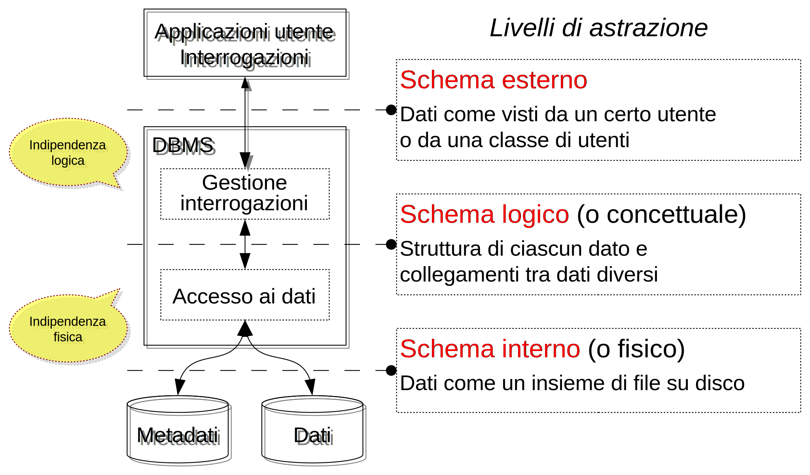
Linguaggi DDL e DML
- DDL (Data Definition Language), intensionale
- Usato dal DBA (amministratore)
- Definire lo schema dati, secondo il modello concettuale: gerarchico, relazionale ecc.
- Definire tabelle, campi, chiavi ecc.
- DML (Data Manipulation Language), estensionale
- Usato all'interno delle applicazioni
- Operazioni CRUD (Create, Read, Update, Delete)
- SQL (INSERT, SELECT, UPDATE, DELETE)
- ~ 4 verbi HTTP (POST, GET, PUT, DELETE)
Modelli dei dati
- Caratterizza livello concettuale e esterno DBMS
- Definito da regole precise, per esprimere sia le proprietà statiche che quelle dinamiche dei dati
- Evoluzione dei modelli:
- Gerarchico (anni 1960)
- Reticolare (anni 1970)
- Relazionale (anni 1970)
- Object-relational, object-oriented (anni 1980)
Modello relazionale
Modello relazionale
- Codd - 1970; DBMS reali - 1981
- Si basa sul concetto matematico di relazione
- Relazioni rappresentate da familiari tabelle
- Successo anche per semplicità di utilizzo
- A ciascun dominio è associato un nome (attributo), unico nella relazione
- Il nome “descrive” il ruolo del dominio
- Attributi usati come intestazioni delle colonne
- Informazioni inserite nelle righe della tabella
Definizione di relazione
- Relazione
R: insieme di n-uple ordinate
(d1 … dn)tali ched1 ϵ D1 ... dn ϵ Dn - Cioè
Rè sottoinsieme del prodotto cartesianoD1 × D2 × … × Dn - Insiemi
D1 … Dn(anche non distinti) detti domini - Valore
ndetto grado diR - Il numero di n-uple in
Rè detto cardinalità diR
Database universitario
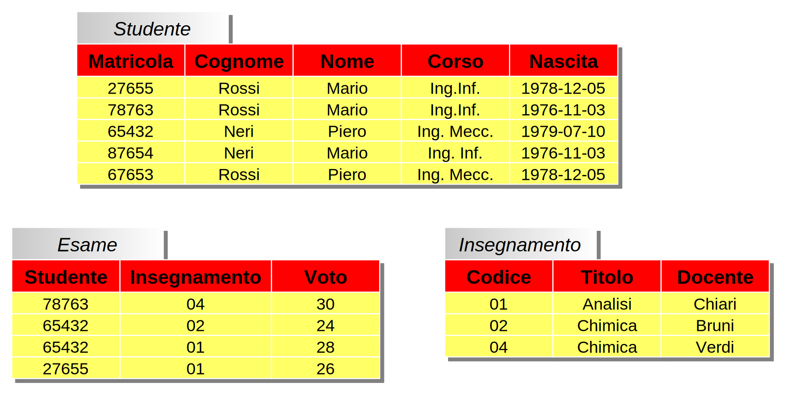
Terminologia
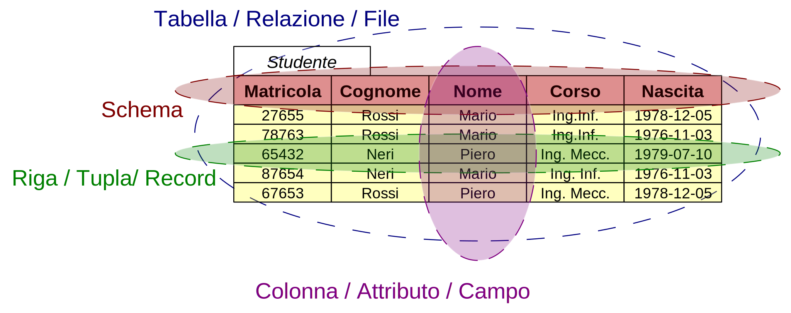
Dominio di un attributo
- Tuple di una relazione definite dall'insieme dei valori corrispondenti agli attributi
- Dominio di un attributo: insieme di tutti e soli i valori che quell'attributo può assumere
- Es. Dominio dei codici fiscali
- Formato dalle stringhe di 16 caratteri che rispettano con precisione le regole di generazione dei codici fiscali
Modello E-R
Modello E-R
- Si creano associazioni tra entità distinte, tramite condivisione di attributi
- Le righe di diverse tabelle hanno domini in comune
- Es. Database universitario
Studentiedesamisono associati tramite gli attributimatricolaestudenteInsegnamentiedesamisono associati tramite gli attributiinsegnamentoecodice
- Semplicità: forza del modello relazionale!
Chiave primaria
- Una tabella (relazione) non dovrebbe contenere due righe identiche
- Sempre possibile scegliere un sottoinsieme di campi t.c. ...
- Ciascuna riga della tabella identificata univocamente
- Chiave primaria (primary key, PK) di una tabella:
- Minimo sottoinsieme di campi che permette di...
- Identificare univocamente le righe della tabella
Chiave esterna
- Le informazioni presenti in tabelle diverse possono essere associate tra loro perché tali tabelle hanno dei domini in comune
- Quando il dominio di un campo
Kche è chiave primaria in una tabellaAè presente anche in un’altra tabellaB... - Allora questo campo
Kè detto chiave esterna (foreign key, FK) verso la tabella A
Concetto e tipo di chiave
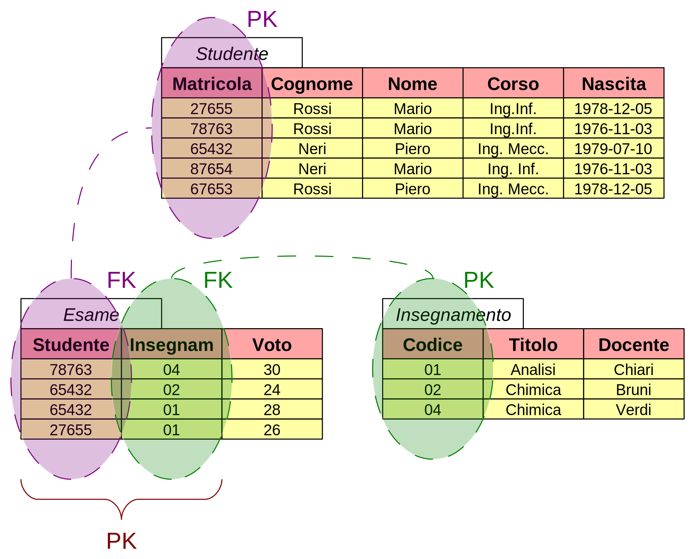
Chiave candidata
- Le chiavi candidate sono gli attributi in una relazione con la proprietà di poter essere la chiave primaria:
- Tra le chiavi candidate deve essere scelta la chiave primaria
- Le chiavi escluse si dicono chiavi alternative
- Le righe di una tabella rappresentano “entità” del mondo reale
- La chiave primaria rappresenta il modo con cui è possibile distinguere queste entità
Normalizzazione
- Processo di organizzazione dei dati per evitare ridondanza, anomalie, inefficienza
- Stessa informazione in più copie → svantaggi
- Maggior uso di memoria
- Modifiche ripetute della stessa informazione
- Inconsistenza dei dati, se aggiornati in modo indipendente; la stessa informazione potrebbe assumere valori diversi
Prima forma normale
- La relazione rispetta il modello relazionale
- Le tuple hanno un numero fisso di attributi definiti su domini elementari
- Non ci sono righe uguali
- Atomicità: solo attributi elementari
- Non ci sono attributi ripetitivi
Seconda forma normale
- Non ci sono attributi non-chiave che dipendono parzialmente dalla chiave
Terza forma normale
- Non ci sono attributi non-chiave che dipendono transitivamente dalla chiave
- Ossia dipendenti da campi non-chiave
Operatori relazionali
Operatori relazionali
- Base teorica per i linguaggi di interrogazione delle basi di dati relazionali
- Operano su intere tabelle considerate come insiemi, piuttosto che record per record
- Prendono in input tabelle
- Generano in output nuove tabelle
- Operatori
- Unione, intersezione, differenza (op. insiemistici, applicabili a relazioni definite sugli stessi attributi)
- Selezione, proiezione (un solo operando)
- Prodotto cartesiano, join (più operandi)
Operatori insiemistici
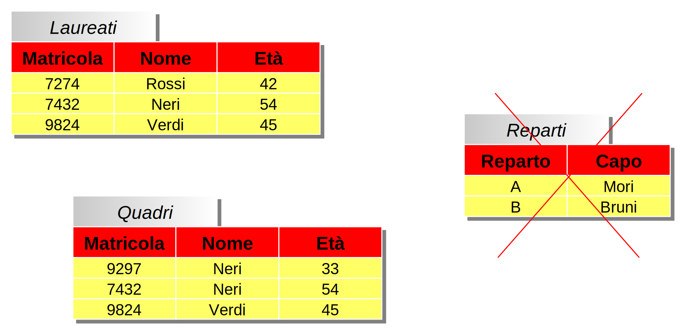
Unione
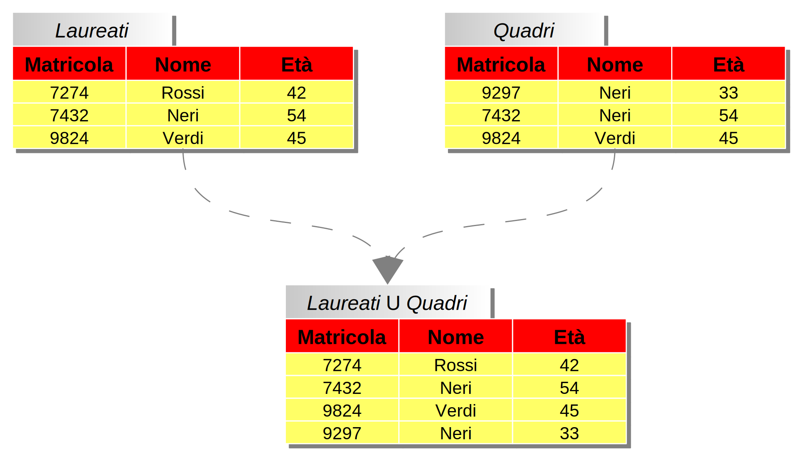
Intersezione
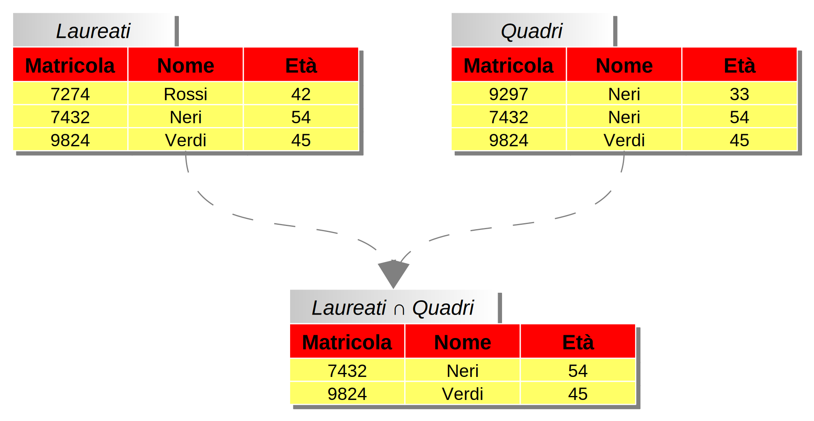
Differenza
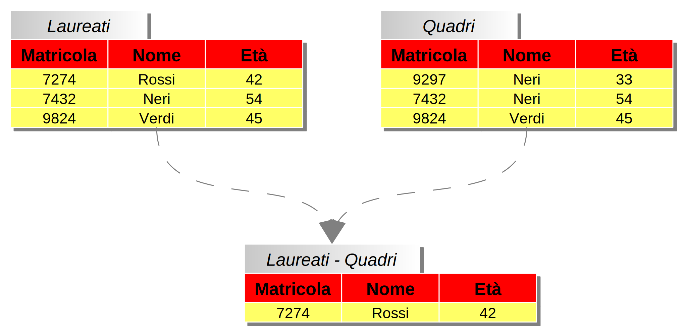
Selezione e proiezione
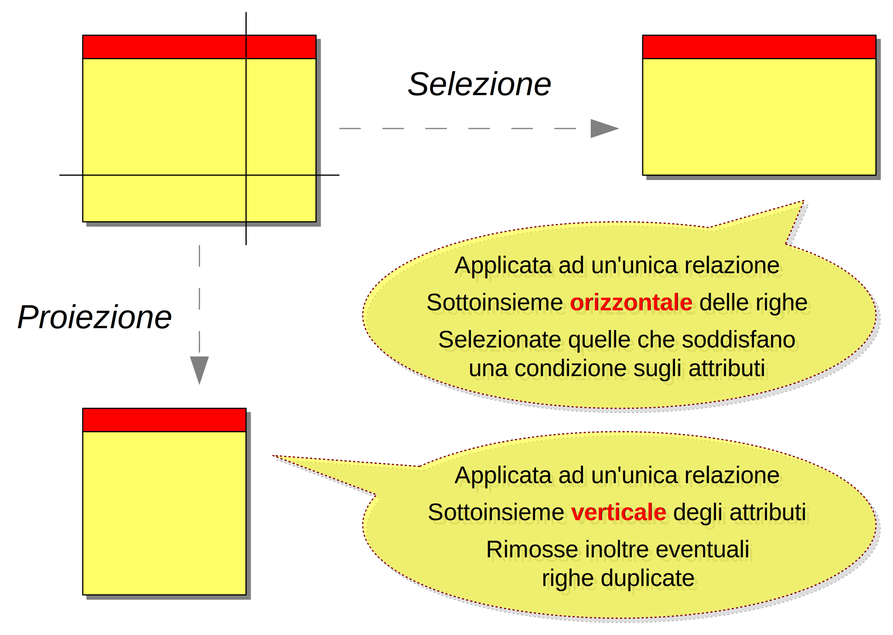
Selezione
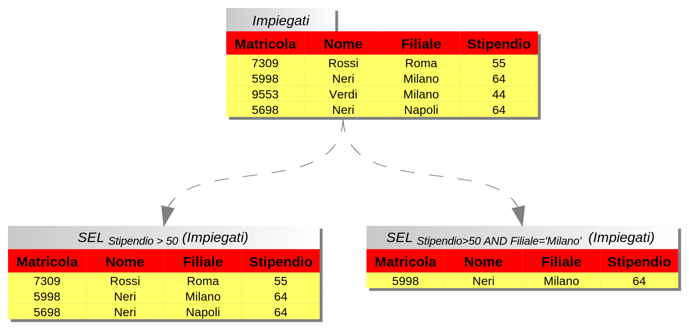
Proiezione
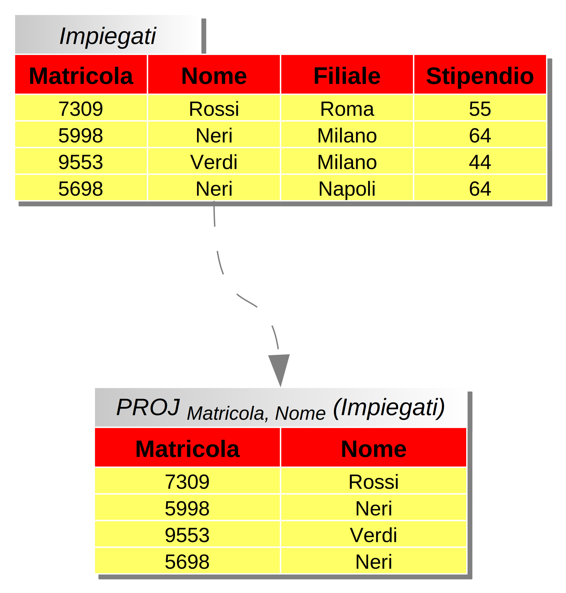
Prodotto cartesiano
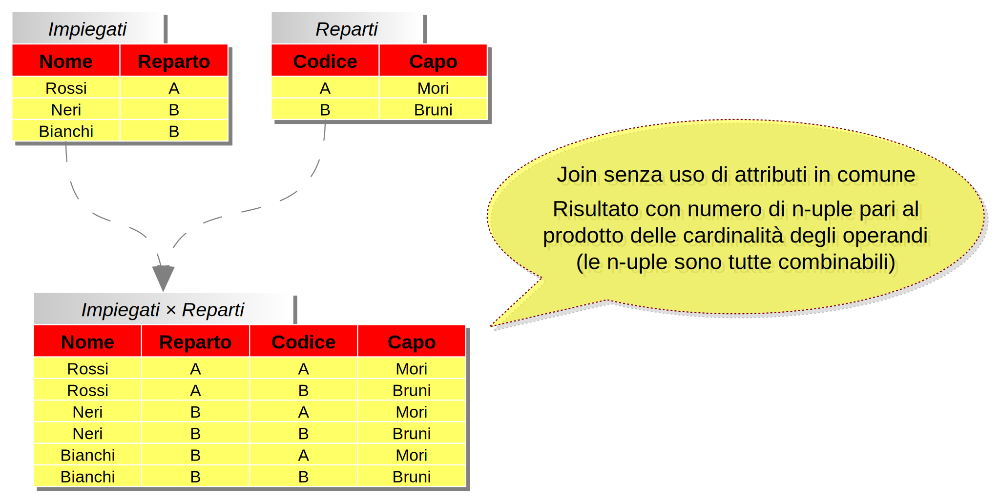
Join
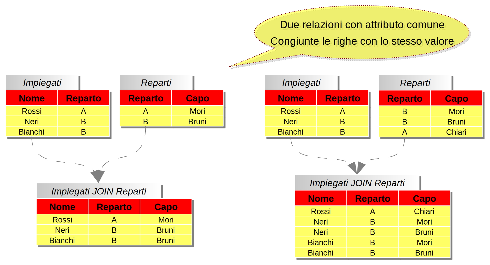
Proiezione + selezione
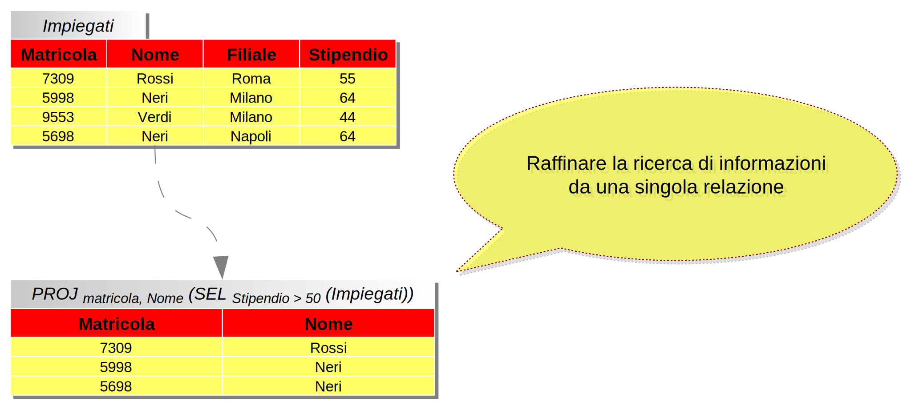
Join + selezione
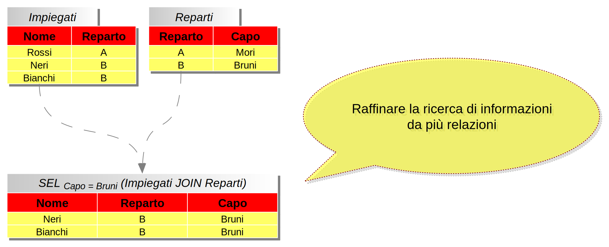
Join + proiezione
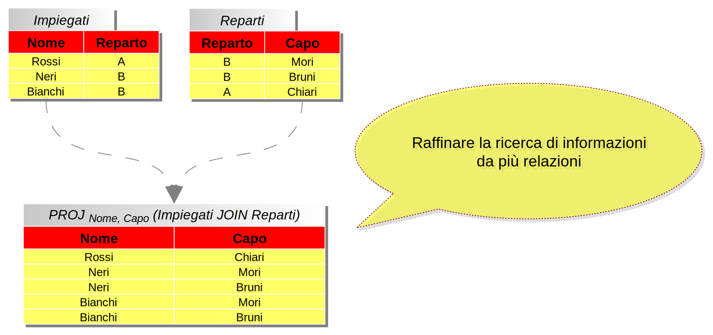
Structured Query Language
Structured Query Language
- SQL: riferimento per manipolazione e interrogazione di basi di dati relazionali
- Deriva da una prima proposta di linguaggio di Ibm chiamato Sequel (1974)
- Prime implementazioni di Ibm e Oracle (1981)
- Da 1983 “standard di fatto”
- Evoluzione corrispondente ad aggiornamenti delle specifiche (1986, 1989, 1992, 1999...)
Es. Tabelle parentele
create table Person (
Name character(20) primary key,
Age numeric(3),
Income numeric(9)
);
create table Paternity (
Father character(20),
Child character(20) unique
);
create table Maternity (
Mother character(20),
Child character(20) unique
);
Es. Ricerche semplici
- Tell me name and income of people less than 30 yo
- Tell me everything of people less than 30 yo
- Fathers of people earning more than 50
select Name, Income from Person where Age < 30
select * from Person where Age < 30
select Paternity.Father
from Person
join Paternity
on Paternity.Child = Person.Name
where Person.Income > 50
Es. Manipolazione dati
insert into Person
values ('Mario', 25, 52);
insert into Person (Name, Age)
values ('Pino', 25);
delete from Person
where Age < 18;
update Person
set Income = 45
where Name = 'Piero';
update Person
set Income = Income * 1.1
where Age < 30;
Es. Ricerche complesse
- Tell me name, income and fathers' age of people earning more than their father
- Tell me the name of each person's mother and father
select C.Name, C.Income, F.Age
from Person C
join Paternity P on C.Name = P.Child
join Person F on F.Name = P.Father
where C.Income > F.Income;
select Paternity.Child, Father, Mother
from Paternity
join Maternity on Paternity.Child = Maternity.Child
Es. Tabella impiegati
create table Employee (
Id character(6) primary key,
Name character(20) not null,
Surname character(20) not null,
Location character(15),
Salary numeric(9) default 0,
City character(15),
foreign key(Location)
references Department(DepName),
unique (Surname, Name)
)
Create, select
create table Table (
Attribute Domain [Constraints],
Attribute Domain [Constraints]
…
[OtherConstraints]
)
select Attribute, Attribute …
from Table, Table …
[where Conditions]
Insert, update, delete
insert into Table [(Attributes)] values(Values)
insert into Table [(Attributes)] select …
update Table set Attribute =
<Expression | select … | null | default>
[where Condition]
delete from Table [where Condition]
Giulio Angiani
Universita' degli Studi di Parma